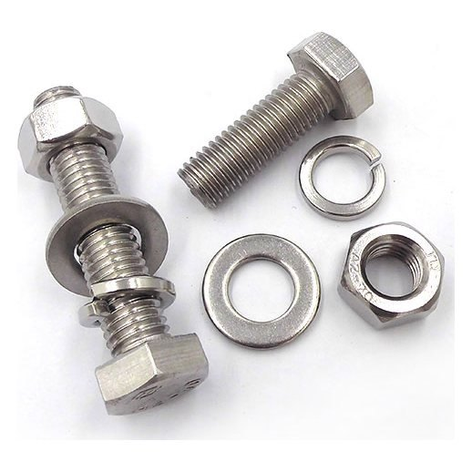
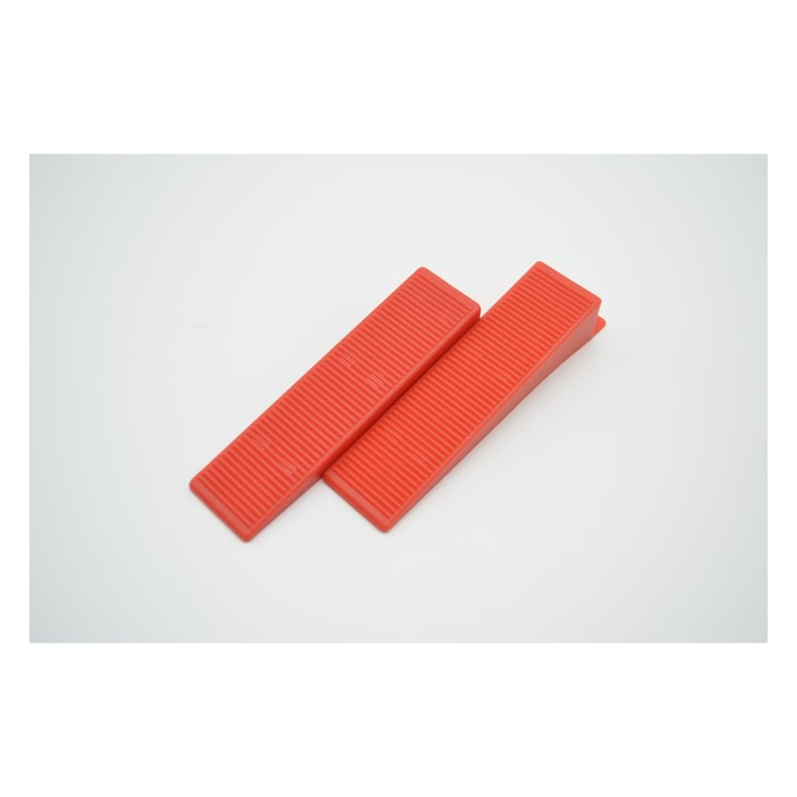

耗材与辅材
1/4" 批头套装 TX/PZ/PH，S2 钢，32 件含磁性批头夹
该套装在塑料盒中集合 30 支 1/4 英寸六角柄批头（一字、十字、PZ、梅花、内六角）以及带转接头的批头夹，覆盖工地和车间常见的螺丝驱动类型。S2 工具钢，硬度 58 至 62 HRC，表面经磷化、镀镍和喷砂处理，带磁性吸附，贴合牢固、防锈，可单手操作。德国买家期望驱动槽型尺寸符合 ISO 10664 和 ISO 1173，规格标识清晰，涂层符合 REACH。
技术参数
| 内容 | 32 件：30 支批头 + 批头夹 + 转接头 |
|---|---|
| 驱动类型 | 一字、十字（PH）、PZ、梅花（TX）、内六角 |
| 材质 | S2 工具钢 |
| 硬度 | 58 至 62 HRC |
| 柄部 | 1/4"（6.35 mm）六角 |
| 批头长度 | 25 mm 和 75 mm |
| 表面处理 | 磷化、镀镍、喷砂 |
| 磁性 / 包装 | 带磁性；塑料盒、双泡壳或散装 |
| 海关编码（HS） | 82079030 |
欧盟标准与法规
ISO 1173机用螺丝批头和批头夹的驱动端，尺寸与扭矩试验ISO 10664内六角花形（梅花槽）驱动槽型尺寸ISO 8764十字槽（PH/PZ）驱动，螺丝批头尺寸REACH (EG) Nr. 1907/2006涂层（镍、磷化），SVHC 声明(EU) 2023/988 (GPSR)通用产品安全法规：欧盟责任人、标识、可追溯性VerpackG / LUCID
搭配产品
刨花板螺钉 5 x 50 mm，梅花槽，镀黄锌沉头梅花槽刨花板螺钉，免预钻孔，适用于木结构和干壁龙骨的快速安装。
混凝土螺钉 7.5 x 80 mm，梅花槽，沉头，镀蓝锌自攻沉头混凝土螺钉，无需膨胀管即可将门窗框、木龙骨和型材快速固定在混凝土和砖墙上。
18 V无刷充电式电钻/螺丝刀 （双速）配双速变速箱的18 V无刷充电式电钻/螺丝刀，适用于木材、金属和干式隔墙的钻孔与拧紧——每个工地的日常手持工具。
刨花板螺丝 Torx 组合收纳盒，420 件 （3.0-5.0 mm, 黄锌）含批头420 颗常用规格梅花槽刨花板螺丝，分格装入收纳盒并附配套批头：安装和车间的便捷之选。
VDE 1000 V 螺丝刀套装 (6 件)6 件 1000 V 绝缘螺丝刀套装(一字、十字、单极验电螺丝刀),用于电气安装和维护。

六角螺栓 DIN 933 M8 x 40 mm，不锈钢 A2A2-70不锈钢全牙六角螺栓。
本类别其他产品
布基胶带 （强力胶带）50 mm x 50 m抗撕裂、防水的布基胶带，用于工地固定、密封和捆扎。
美纹纸胶带 30 mm x 50 m （皱纹纸基材, 天然橡胶胶粘剂）通用型皱纹纸胶带，用于室内涂装和刮腻子时形成利落的涂料边线并固定遮蔽膜。
18 mm 美工刀 （可折断刀片, 金属刀身, 自锁）坚固耐用的 18 mm 折断式美工刀，用于切割薄膜、保温材料、地板和纸板。
18 mm 折断式刀片，10 片装 （SK5 钢, 适配美工刀）锋利的 18 mm 备用刀片，带折断线：折下旧刃即可继续切割，无需换刀。
500 ml 施工标记喷漆 （倒喷型, 荧光色）可倒喷的荧光标记漆，用于在矿物基面上标出切割线、钻孔位和管线走向。
不锈钢切割片 125 x 1.0 x 22.2 mm （金属/不锈钢用）超薄低铁结合剂切割片，用于钢材与不锈钢的低毛刺精准切割。
大号切割片 230 x 3.0 x 22.2 mm （金属/钢材, 角磨机用）适用于 230 mm 角磨机的耐用切割片，用于切割型钢、管材和钢筋。
350 mm 切割片 （型材切割机用, 3.0 x 25.4 mm, 钢材）大号切割片，用于型材切割机快速截断型钢、管材和圆钢。
盘钉 （气动钉）2.5 x 50 mm，15°，环纹杆，镀锌气动盘钉枪用钢线连排钉，适用于模板、屋面、托盘和木框架施工。
尼龙框架锚栓 10 x 100 mm （含螺钉）聚酰胺框架锚栓配螺钉，用于在混凝土和砖墙中固定型材、门窗框和龙骨。
尼龙膨胀管 （通用型）10 x 50 mm，聚酰胺可胀紧的聚酰胺通用膨胀管，配合螺钉用于混凝土、实心砖、多孔砖及空心基材。
擦窗套装 （刮水器 + 带套涂水器, 可接伸缩杆）由橡胶刮水器和涂水器组成的两件套，用于工程竣工清洁时擦出无水痕的玻璃面。
Ø 125 mm 锆刚玉百叶片 （百叶轮）K60，10 片装锆刚玉百叶片，适用于钢和不锈钢：一道工序完成磨削、去毛刺和修整。
SDS-plus 混凝土/石材钻头套装，硬质合金 （四刃），5 件 5-10 mm五件 SDS-plus 套装，四刃硬质合金钻头，适用于 5 至 10 mm 的混凝土、砌体和天然石材。
铝箔胶带 50 mm x 50 m用于保温和通风的自粘铝箔胶带。

油漆保护无纺布 270 g/m² 1 x 50 m吸水防滑底面的覆盖无纺布。

超细纤维清洁布 40 x 40 cm，10片装适用于玻璃和表面的无绒超细纤维布。
墙漆滚筒 18 cm，黄线18 cm墙面和乳胶漆滚筒。

瓷砖十字架 3 mm，250个用于均匀3 mm缝隙的塑料瓷砖十字架。

尼龙扎带 300 x 4.8 mm，100条装自锁尼龙扎带 300 x 4.8 mm。
托盘拉伸膜 500 mm x 300 m，20 µ用于托盘包装的LLDPE手用拉伸膜。